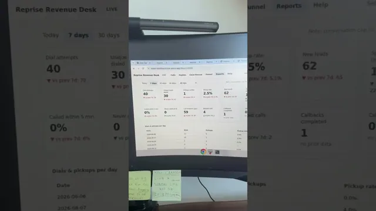

Grok Bot이 Openclaw와 Hermes를 보내버렸다

원본 영상 보기 →
- 채용 방식 그대로 AI 팀을 꾸릴 수 있어요
- API가 없어도 자동화 대상이 돼요
- 화면 녹화 한 번으로 업무를 가르칠 수 있어요
한 줄 요약
일론 머스크 쪽에서 새로 내놓은 그록봇(Grokbot)을 소개하는 영상이에요. AI 하나를 여러 개의 AI 팀원으로 구성된 조직으로 바꿔주는 시스템인데요. 채용하듯 이름과 직함만 정해주면, 각자 클라우드 컴퓨터를 가진 봇들이 서로 대화하며 실제 업무를 처리하는 구조입니다.
전체 내용 정리
채용하듯 이름과 직함만 정하면 끝나는 설정 방식
그록봇은 노드를 엮거나 캔버스를 짤 필요도, 터미널을 쓸 필요도 없어요. 사람을 채용하는 것과 똑같은 방식으로 봇을 만든다고 소개합니다.
봇 이름을 정하고, 직함을 정하고, 한 줄짜리 업무 설명만 적으면 그게 설정의 전부라고 설명해요.
봇마다 클라우드에 자기 컴퓨터를 갖고 있어 API 없는 소프트웨어도 다룰 수 있어요
그록봇의 핵심 기능은 각 봇이 클라우드에서 자기만의 컴퓨터를 하나씩 띄운다는 점입니다.
이 컴퓨터로 CRM을 확인하고, 여러 탭을 직접 클릭해서 넘나들고, 사람이 하듯 리포트를 뽑아낼 수 있어요.
그 덕분에 지금까지 API 연동이 전혀 없던 소프트웨어에서도 작업이 가능하다고 설명합니다. 실제 사례로 자신의 커스텀 어포인트먼트 세터 리포트를 봇이 직접 훑는 모습을 보여줘요.
봇들끼리 서로 대화하며 부족한 정보를 주고받아요
또 다른 특징은 이 봇들이 서로 소통한다는 점이에요.
한 봇이 파이프라인을 담당하는 다른 봇과 계속 대화를 주고받으며, 자신에게 없는 정보를 그 봇에게서 얻어오는 과정을 예시로 보여줍니다.
클로드 코드·챗GPT와 다른 점 — 사람이 옆에서 운전할 필요가 없어요
클로드 코드나 챗GPT 같은 하니스(harness)는 사람이 직접 옆에서 계속 지시하고 몰아가야 하잖아요.
그록봇은 봇마다 자기 컴퓨터가 있어서, 사람이 붙어 있지 않아도 알아서 프로세스를 자동으로 돌리고 정보를 모으고 결과물을 발행할 수 있다고 설명해요.
화면 녹화로 업무를 가르치는 "teach a task" 기능
자신의 업무 프로세스를 봇에게 가르치는 것도 쉽다고 소개합니다.
"teach a task" 버튼을 누르면 사람이 평소 그 업무를 처리하는 화면을 그대로 녹화해요. 봇이 그걸 보고 배운 뒤, 다음번에 요청하면 그대로 재현하거나 정해진 스케줄에 따라 자동으로 실행할 수 있습니다.
핵심 인사이트
- 채용 방식 그대로 AI 팀을 꾸릴 수 있어요: 이름·직함·한 줄 업무 설명만으로 봇을 만드는 방식이라, 노코드보다도 진입장벽이 낮습니다.
- API가 없어도 자동화 대상이 돼요: 각 봇이 클라우드에 자기 컴퓨터를 갖고 화면을 직접 조작하기 때문에, 연동이 없던 낡은 소프트웨어에서도 반복 업무를 맡길 수 있죠.
- 화면 녹화 한 번으로 업무를 가르칠 수 있어요: "teach a task" 기능으로 사람이 하던 작업을 그대로 녹화해서 보여주면, 봇이 학습해 다음부터 스스로 혹은 스케줄대로 그 일을 반복합니다.
오늘 당장 해볼 것
- 매일 또는 매주 반복하지만 아직 API 연동이 없는 소프트웨어에서 하는 업무(리포트 확인, CRM 탭 넘나들며 데이터 취합 등) 하나를 목록으로 적어보세요.
- 그 업무를 새로 뽑은 직원에게 가르친다고 생각하고 "이름 - 직함 - 한 줄 업무 설명"으로 정리해보세요. 이 형식 그대로 자동화 담당자나 업체에 요청서로 넘길 수 있어요.
- 화면 녹화로 업무를 가르치는 방식(teach-a-task류 기능)을 지원하는 자동화 도구가 있는지, 지금 쓰는 자동화 업체나 플랫폼에 문의해보세요.